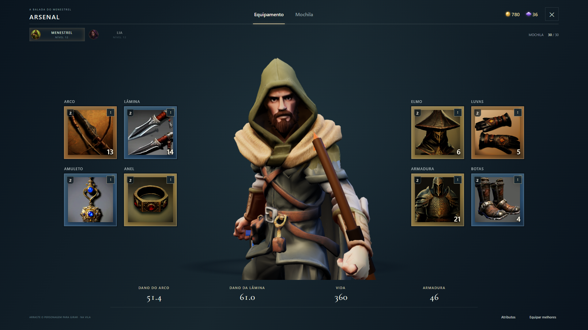
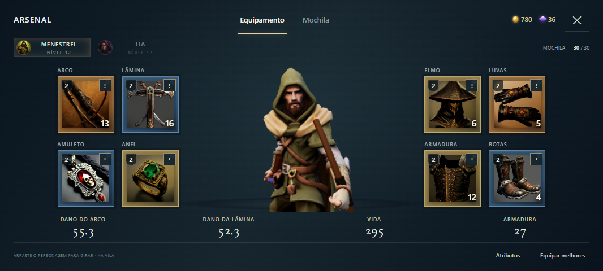
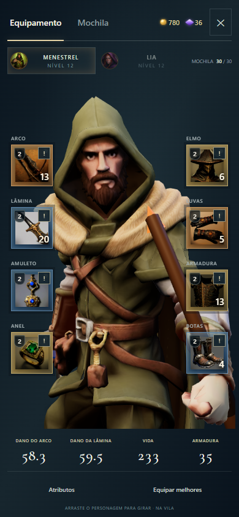

O corpo do personagem foi corrigido no Arsenal. A câmera está mais próxima, destacando rosto e tronco como na referência enviada, e a prévia toca a animação idle em loop.
Corpo visível e pose de repouso
O efeito que deixava o corpo translúcido no Arsenal foi corrigido. O personagem aparece sólido e em repouso, mesmo quando o inventário é aberto durante a corrida. A animação idle mantém os movimentos sutis de descanso.

Enquadramento mais próximo, com corpo sólido e equipamentos acessíveis ao redor.
O mesmo enquadramento no celular
O personagem permanece em idle tanto na tela de equipamento quanto na seleção de peças. Toque nos espaços para escolher alternativas e arraste o personagem para girá-lo.

Captura em 1066×480, com oito espaços de equipamento e atributos na base.

Captura em 390×844. Os cartões ficam à frente do personagem.
27 scripts de regressão e nove resoluções validados. Teste com modelos já usados pelo combate, idle em dois ciclos, toque simulado e rotação. Capturas da interface real na bancada de testes; avaliação em aparelho físico ainda necessária.